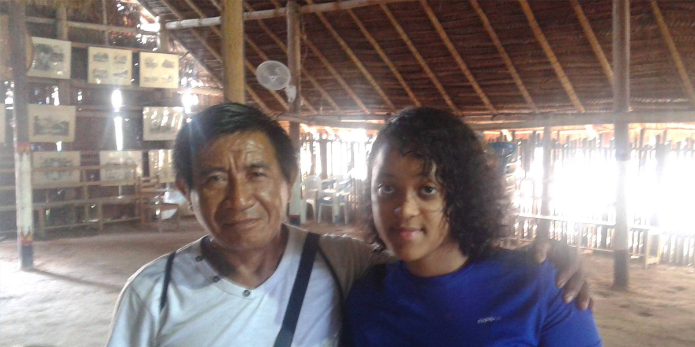

Rochester Institute of Technology
3D Animation Major
Junior Year
I am a 3D Animation major at Rochester Institute of Technology. I like 3D modeling and character animating. The programs I've used for my artwork include ZBrush, Maya, TV Paint, Flash, Photoshop, Illustrator, Premiere Pro and After Effects.
Random Facts:
I speak Spanish and Portuguese and studied Japanese for most of high school.
Last summer, I went to the Amazonas, Brazil to teach basic 2D animation and drawing programs and principles for The Desano Language Documentation Project sponsored by The National Science Foundation.
I'm a dog lover.
Me (Right) next to Herculino Alvez (Left), the creator of the two animated Desano stories that I animated for the Desano Language Documentation Project.